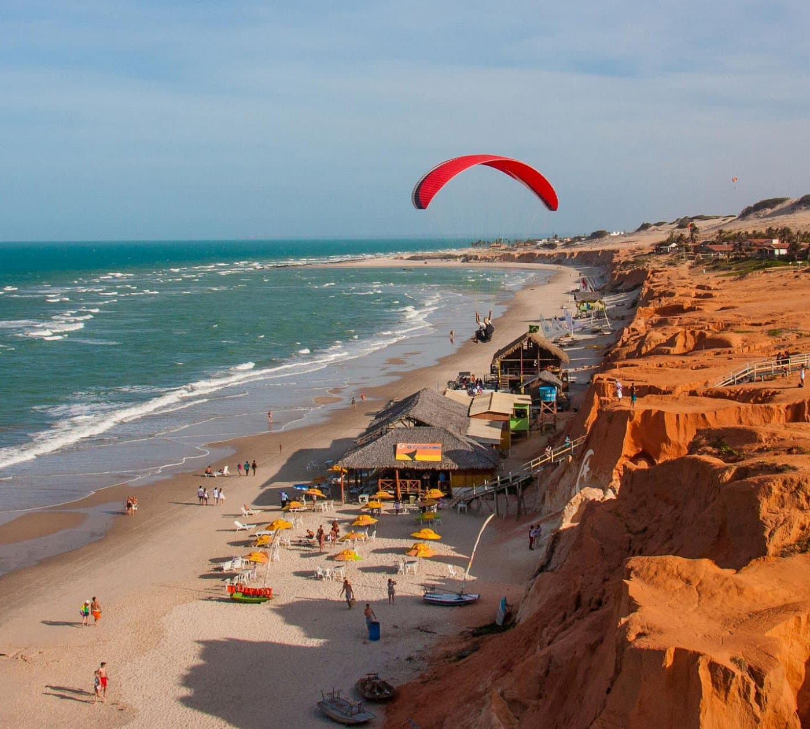

O Festival do Fogo de Canoa Quebrada é uma celebração vibrante à beira-mar, onde a magia dos fogos de artifício ilumina o céu enquanto a música ao vivo e as danças típicas da região criam uma atmosfera única. Realizado em um dos cenários mais deslumbrantes de Alagoas, o evento reúne turistas e moradores para uma noite de pura energia e encanto. Além dos espetáculos de dança e música, o festival é uma grande festa popular, com barracas de comidas típicas, artesanato e apresentações culturais que refletem a tradição e a identidade de Canoa Quebrada, tornando-a uma experiência inesquecível para todos os sentidos.
Reservar